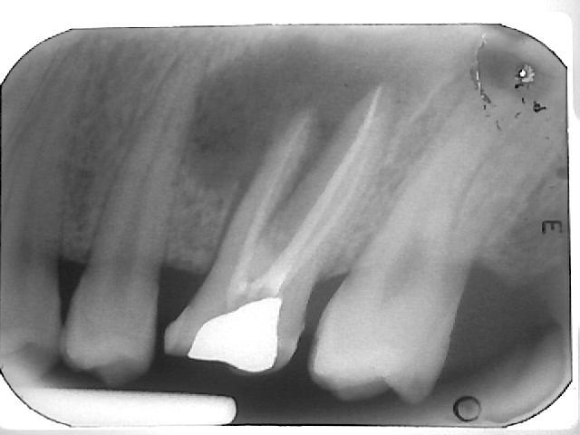

ריפוי של נגעים סב-שורשיים
בצילום רנטגן ניתן לראות נגע סב-שורשי ע"י אזורים של חוסר עצם סביב השורש. לאחר טיפול שורש, זמן הריפוי והמילוי עם עצם, של אותם חללים, יכול לקחת מספר חודשים עד כשנתיים ולעיתים אף יותר מכך, ולכן במקרים אלו, יש חשיבות לבצע מעקבים.
הצגת מקרים
מקרה 1
צילום אבחנתי נגע סביב שורש D

צילום ביקורת
9 חודשים לאחר מיכן רואים ריפוי של הנגע

מקרה 2
צילום אבחנתי
בתעלות M יש סטיה מכיוון התעלה, נקב ונגע סב-שורשי

צילום ביקורת
14 שנים לאחר מיכן רואים ריפוי של הנגע

מקרה 3
צילום אבחנתי
נגע סביב שורש M

צילום ביקורת
שנה ושלושה חודשים לאחר מיכן רואים ריפוי של הנגע

מקרה 4
צילום אבחנתי (עם גוטה פרקה דרך הסינוס טראקט)
נגע גדול הכולל את קצות השורשים ואזור המסעף הבין שורשי

צילום ביקורת
3 שנים לאחר מיכן רואים ריפוי של הנגע
מקרה 5
צילום אבחנתי
נגע הכולל את קצות השורשים

צילום ביקורת
7 חודשים לאחר מיכן רואים ריפוי של הנגע

מקרה 6
צילום אבחנתי
נגע סב-שורשי גדול

צילום בסיום הטיפול

שנתיים לאחר מיכן רואים ריפוי חלקי משמעותי של הנגע

מקרה 7
צילום אבחנתי
נגע סב-שורשי גדול

צילום במהלך הטיפול
לאחר 3 חודשים עם תרופות חבישה 2Ca(OH)

צילום ביקורת
10 חודשים ו- 15 חודשים מתחילת הטיפול רואים ריפוי של הנע הסב-שורשי